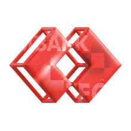
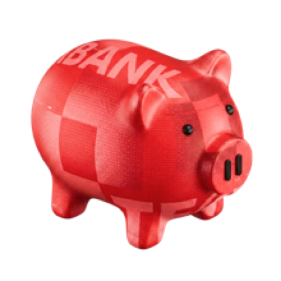
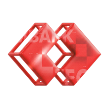

Đề xuất revamp Techcombank Mobile cho khách hàng Mass. Hero journey của một tháng lương.
Lương về.Tiền đi đâu.Luôn chủ động.
Minh, 27 tuổi, nhân viên Công ty BNhận lương qua Techcombank vào ngày 5 hằng tháng. Ngân hàng chính để chi tiêu hằng ngày là một ngân hàng khác. Persona: Dynamic Salary.
Chúng tôi không thiết kế lại cả app. Chúng tôi chọn 15 màn hình trên hành trình một tháng của Minh, để ở mỗi khoảnh khắc, giữ tiền ở TCB đều có lợi hơn chuyển đi.
Lương về TCB, nhưng không ở lại TCB
Công ty B chọn TCB để trả lương, Minh thì không. Trong một hai ngày, phần lớn lương được chuyển sang ngân hàng Minh dùng hằng ngày. TCB trở thành trạm trung chuyển lương.
Vì sao lương rời đi
Giả thuyết, cần kiểm chứng bằng dữ liệu và phỏng vấn
- Mỏ neo ở ngân hàng chính. Ví điện tử, hóa đơn tự động, khoản vay, thẻ đều gắn với ngân hàng kia.
- Không thấy lợi ích để ở. Khách hàng không biết số dư ở TCB có thể tự sinh lời, ưu đãi thì tản mát.
- Tài khoản do công ty chọn. Khách hàng xem TCB là “tài khoản nhận lương”, không phải ngân hàng của mình.
- Thói quen tháng nào cũng vậy. Lương về là chuyển, không có khoảnh khắc nào khiến họ dừng lại cân nhắc.
TCB mất gì
Mỗi đồng lương rời đi kéo theo
- Số dư CASA, nguồn vốn chi phí thấp nhất của ngân hàng.
- Dữ liệu chi tiêu. Không có dữ liệu thì không có insight, không cá nhân hóa được.
- Tần suất mở app. Khách hàng chỉ mở TCB vào ngày lương.
- Cơ hội bán chéo thẻ, tiết kiệm, vay, bảo hiểm.
Đề xuất này làm gì
Không chặn tiền đi. Làm cho việc ở lại có lợi hơn.
- Ngày lương: lương tự sinh lời, kế hoạch lương mặc định giữ lại.
- Hằng ngày: kéo hóa đơn, QR và chuyển tiền gia đình về TCB.
- Cuối tháng: thẻ TCB duyệt trước nhờ lịch sử lương.
- Nhìn lại: ghi nhận bao nhiêu lương đã ở lại và khách hàng nhận được gì.
Lương của Minh còn lại bao nhiêu ở TCB
Minh họa theo giả thuyết, cần đối chiếu với dữ liệu thật về dòng tiền của nhóm Dynamic Salary.
Một tháng, năm khoảnh khắc
Mỗi khoảnh khắc gắn với một capability và một nhóm màn hình. Hàng cuối dẫn thẳng tới wireframe tương ứng.
Năm nguyên tắc thiết kế
Một nguyên tắc đến từ bài toán kinh doanh. Bốn nguyên tắc còn lại gom từ buổi dot voting, quanh hai câu hỏi How might we: giúp khách hàng biết mình đang ở đâu và làm gì tiếp theo, và ra quyết định tài chính tự tin ở mọi khoảnh khắc.
Ở lại vì có lợi
Từ bài toán kinh doanh
Không chặn, không làm khó việc chuyển tiền đi. Mỗi màn hình phải trả lời: giữ tiền ở TCB thì Minh được gì, ngay hôm nay.
Xuất hiện ở: Thông báo lương, Kế hoạch lương, Hóa đơn, Recap

AI luôn ở cạnh
6 phiếu, chủ đề được vote cao nhất
Thanh “Hỏi bất cứ điều gì” cố định ở mọi màn hình chính. Gõ hoặc nói một câu tự nhiên, AI điền sẵn và đưa ra màn hình xác nhận.
Xuất hiện ở: Home, Thanh toán, Trợ lý AI, Insight
Luôn có lý do
5 trên 6 contributors
Mọi con số và gợi ý đều có nút “Vì sao?” chỉ ra dữ liệu phía sau. Luôn có đường lui rõ ràng: sửa, hủy, tắt.
Xuất hiện ở: Chia lương, Chuyển tiền, Cảnh báo dòng tiền

Một lần xác nhận
Auto-action, từ board ý tưởng
Việc lặp lại mỗi tháng được gom thành một kế hoạch. Khách hàng xem lại và xác nhận một lần, không phải nhập lại từng lệnh.
Xuất hiện ở: Thông báo lương, Chia lương, Lịch tài chính

Đúng lúc, đúng chỗ
Contextual Intelligence, 4 phiếu
App biết hôm nay là ngày mấy trong tháng lương. Insight nằm ngay dưới số dư, ưu đãi hiện khi đang thanh toán, cảnh báo đến trước khi hết tiền.
Xuất hiện ở: Insight, Quét QR, Cảnh báo, Recap tháng
15 màn hình trên hành trình
Kích thước 375 × 812, theo ngôn ngữ thiết kế của bản AI-First Redesign. Chấm đỏ đánh số tương ứng với ghi chú bên cạnh. Bấm “Thử trong prototype” để đi theo luồng.
Đo bằng gì
Một chỉ số chính cho bài toán giữ lương, các chỉ số hỗ trợ theo từng khoảnh khắc, và chỉ số bảo vệ để không đánh đổi trải nghiệm.
Của nhóm khách hàng Dynamic Salary, so với nhóm đối chứng chưa dùng thiết kế mới.
Chỉ số hỗ trợ
- Tỷ lệ bật kế hoạch lương tự động
- Số tiền chuyển ra ngân hàng khác trong 48 giờ sau ngày lương
- Tỷ lệ khách hàng chuyển ít nhất một hóa đơn định kỳ về TCB
- Số giao dịch QR và chi tiêu qua TCB mỗi tháng
- Số ngày mở app mỗi tháng, và tỷ lệ dùng Insight
Chỉ số bảo vệ
- Không tăng khiếu nại về việc khó chuyển tiền ra ngoài
- Tỷ lệ trả thẻ đúng hạn ở luồng thẻ cầu nối
- Mức hài lòng và NPS của nhóm Dynamic Salary
Cần kiểm chứng trước khi build
- Bao nhiêu phần trăm lương thật sự rời đi trong 48 giờ
- Lý do chính khiến khách hàng chuyển đi
- Mức lãi hoặc ưu đãi nào đủ để đổi thói quen
- Bao nhiêu hóa đơn và ví điện tử đang gắn với ngân hàng khác
Prototype
Chạm vào các vùng có thể bấm trên màn hình để đi tiếp, hoặc chọn một bước bên dưới.
Phím mũi tên để chuyển màn hình. Esc để thoát trình chiếu.